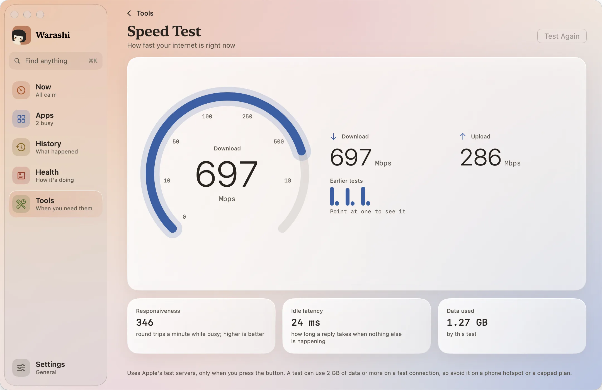
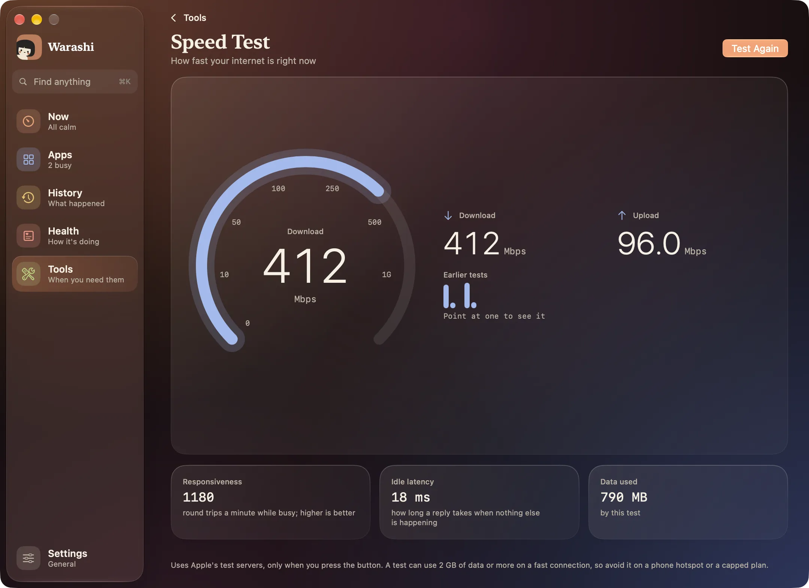

يقيس اختبار السرعة اتصالك باستخدام اختبار الشبكة المدمج من Apple. ولا يعمل إلا عندما تضغط الزر.
- افتح اختبار السرعة
اضغط فتح على بطاقة سرعة الإنترنت في الأدوات، أو السرعة أو الشبكة في نافذة شريط القوائم، أو ابحث عنه بـ ⌘K. يمكنك أيضًا إضافة اختبار السرعة إلى نافذة شريط القوائم وإجراء اختبار دون فتح النافذة.


- اضغط «بدء الاختبار»
يعرض المؤشر سرعتك مباشرة، التنزيل أولًا ثم الرفع، ويرسم الرسم بجانبه الاختبار حتى الآن. يستغرق عادةً أقل من 40 ثانية. اضغط إلغاء للإيقاف.
- اذهب وافعل شيئًا آخر
يمكنك مغادرة الصفحة، أو حتى إغلاق النافذة، أثناء التشغيل. وتعرض الأدوات في الشريط الجانبي كيف يسير وموعد انتهائه. وإنهاء Warashi يوقف الاختبار.
- اقرأ النتيجة
التنزيل والرفع هما سرعتاك. الاستجابة هي عدد الرحلات ذهابًا وإيابًا التي يتحملها اتصالك في الدقيقة وهو مشغول: كلما زادت كان أفضل. زمن الاستجابة في الخمول هو المدة التي يستغرقها الرد حين لا يجري شيء آخر. هذه الأرقام النهائية من Apple.
إن كان هناك ما ليس على ما يرام
- لم ينتهِ الاختبار: تأكد من اتصالك بالإنترنت وحاول مجددًا. قد يخفض VPN النتيجة.
المزيد في استكشاف الأخطاء، أو راسل adam@warashi.app.